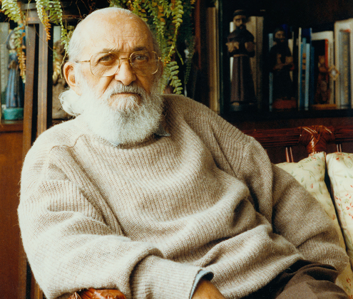

Quem foi Paulo Freire?
Paulo Reglus Neves Freire foi um educador e filósofo brasileiro. É considerado um dos pensadores mais notáveis na história da pedagogia mundial, tendo influenciado o movimento chamado pedagogia crítica. É também o Patrono da Educação Brasileira.
O que é a Pedagogia?
Sendo o terceiro curso mais procurado no Brasil, Pedagogia é a graduação ideal para quem almeja ensinar, orientar e educar pessoas nos diversos estágios da vida. Criada na Grécia Antiga, a Pedagogia vem para se preocupar com a Educação de Excelência e atuar nos mais diversos campos da educação. Entenda o que é pedagogia e saiba mais das atações de um pedagogo. O termo Pedagogia vem da terminologia grega paidagogós, o termo paidos significa criança e gogía significa acompanhar, conduzir. Esse conceito, na época, fazia referência à situação em que um escravo levava as crianças para a escola, porém ele é fundamental para o entendimento do que é pedagogia.Nas comunidades tribais, a educação era passada de pai para filho, o saber era igualitário já que todos tinham o mesmo conhecimento, assim, nessa época, o pai era o educador, aquele que transferia o conhecimento. Foi a partir da Antiga Grécia que os filósofos começaram a se preocupar em qual seria a melhor maneira de repassar a educação. Foi aí que começou a surgir a Pedagogia.